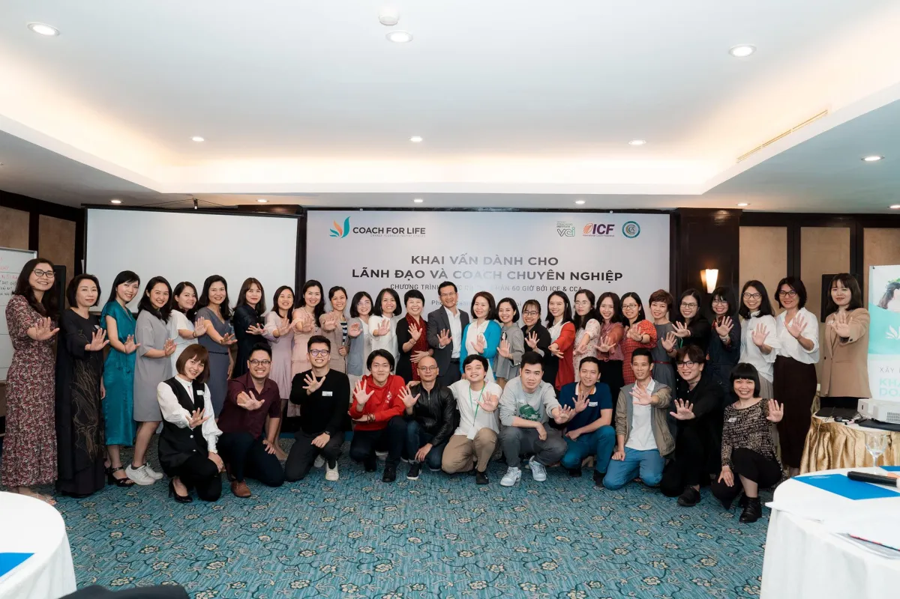

1
LỘ TRÌNH TOÀN DIỆN ĐỂ THÀNH CÔNG TRONG NGHỀ COACH
Transformation Coaching là chương trình được thiết kế kĩ lưỡng về mặt kiến thức chuyên môn và trải nghiệm thực tế trong cuộc sống.
Chương trình sẽ giúp bạn chuyển hóa chính cuộc sống và sự nghiệp của mình, và nhờ đó bạn thấy được giá trị và sức mạnh của Coaching.
Bạn sẽ được luyện tập và ứng dựng kỹ năng Coaching dưới nhiều góc nhìn đa chiều như: trong doanh nghiệp, trong đời sống, trong mối quan hệ gia đình, trong hướng nghiệp ... để tìm ra được lộ trình phát triển phù hợp với bản thân.
